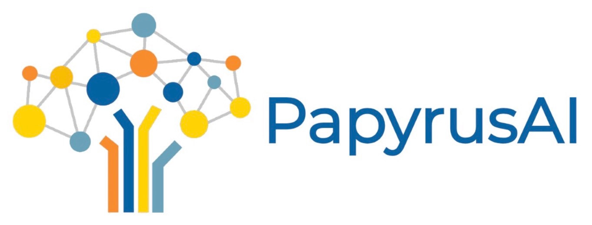
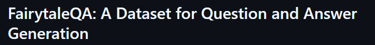

PapyrusAI: AI Classroom Tutor
2025 • Researcher & Product Lead
Co-designed and iterated an AI-powered classroom writing tutor (PapyrusAI).
research
tech design
AIforCA
2025 • Chair
An initiative advancing AI literacy and equitable CS education for California schools.
teaching
leadership
CodeAI: AI & Data Literacy Curriculum
2023 • Middle School Lead (Former)
Curriculum and digital tools for AI/data literacy, deployed in schools and community programs.
research
teaching

FairytaleQA Dataset & StoryBuddy
2022 • Middle School Lead (Former)
Dataset of 10,000+ QA pairs from children’s stories and a collaborative storytelling agent.
research
tech design